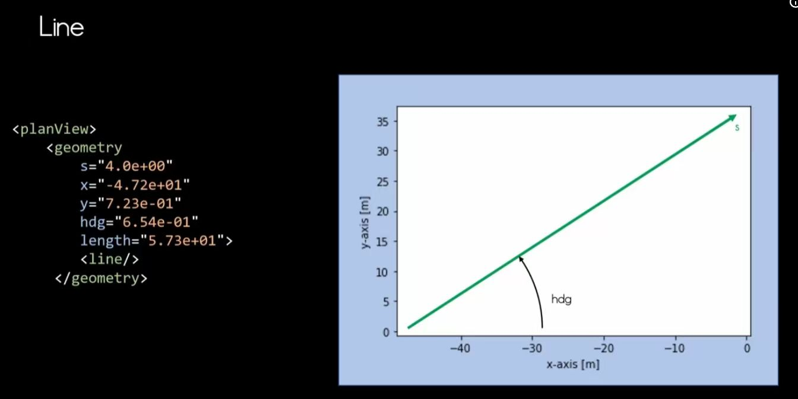
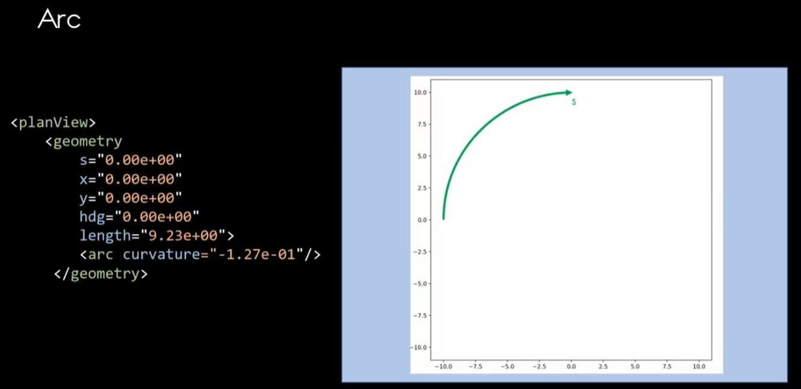
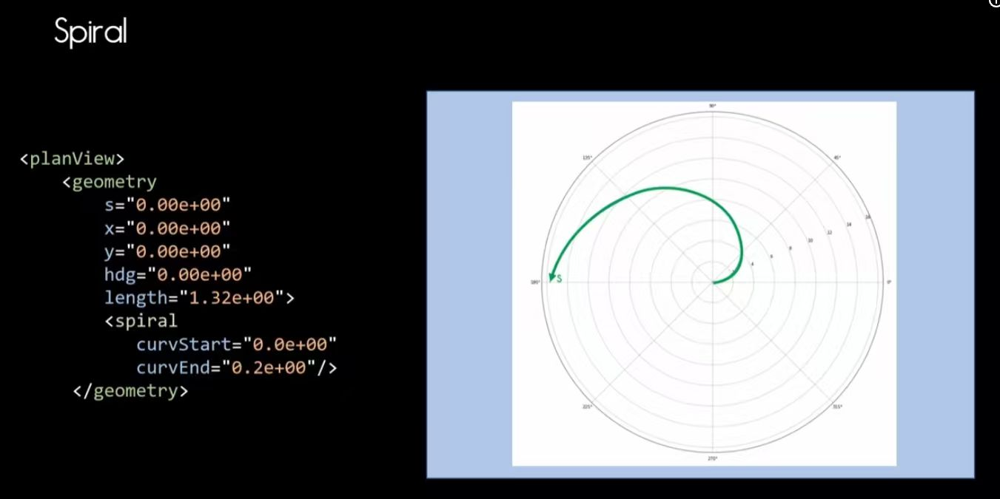
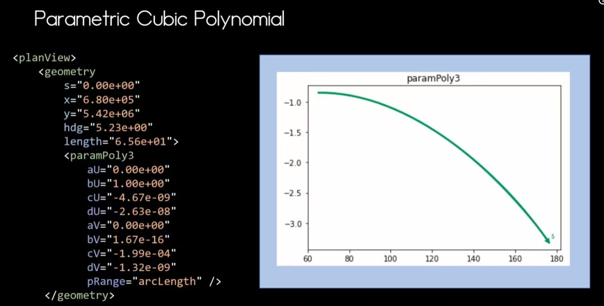

OpenDRIVE 几何表达详述
1. 基本概念与特点
基本概念：OpenDRIVE 是一个基于 XML 的道路网络描述标准，核心在于通过参数化参考线 (Reference Line) 来定义道路结构。
核心特点：参考线中心主义、参数化逻辑、逻辑与物理分离、曲率连续性。
2. 几何基元 (Geometry Primitives)
OpenDRIVE 定义了多种几何基元，这些基元不仅决定了物理轨迹，还决定了车辆转向控制的动力学逻辑 (Δα/Δt):
- (Straight) Lines: Δα/Δt = 0。车辆保持直线行驶，方向盘角度恒定。
- Spirals (螺旋线): Δα/Δt = x°。转向轮均匀转动，用于实现从直线到弯道的平滑过渡。
- Arcs (圆弧): Δα/Δt = 0。转向轮角度固定，形成恒定曲率的圆周轨迹。
- Parametric Cubic Polynomials: Δα/Δt = f(x°)。转向控制随函数动态变化，适用于复杂轨迹跟踪。
Line (直线) 详细示例

特征说明: 转向角变化率 Δα/Δt = 0，车辆保持直线行驶。
<geometry length="57.3"><line/></geometry>
Arc (圆弧) 详细示例

特征说明: 曲率恒定，形成圆周轨迹，方向盘锁定。
<geometry length="9.23"><arc curvature="-0.127"/></geometry>
Spiral (螺旋线) 详细示例

特征说明: 曲率线性变化，模拟方向盘匀速转动过程。
<geometry length="1.32"><spiral curvStart="0.0" curvEnd="0.2"/></geometry>
Parametric Cubic Polynomial (参数化三次多项式)

特征说明: 动态轨迹控制，适用于非标几何路径跟踪。
<paramPoly3 aU="0.0" bU="1.0" ... />
几何连续性 (Geometric Continuity)
在构建路径时，必须严格遵守几何连续性 (Geometric Continuity) 原则：前一个基元的结束状态（航向角 hdg 和曲率 curvature）必须与后一个基元的起始状态完全一致。这种 C1 连续性是仿真动力学准确性的基石。
3. s/t 坐标系 (s/t Coordinate System)
s/t 坐标系是 OpenDRIVE 的核心坐标系统，用于精确定位道路上的点或物体。
← 返回首页